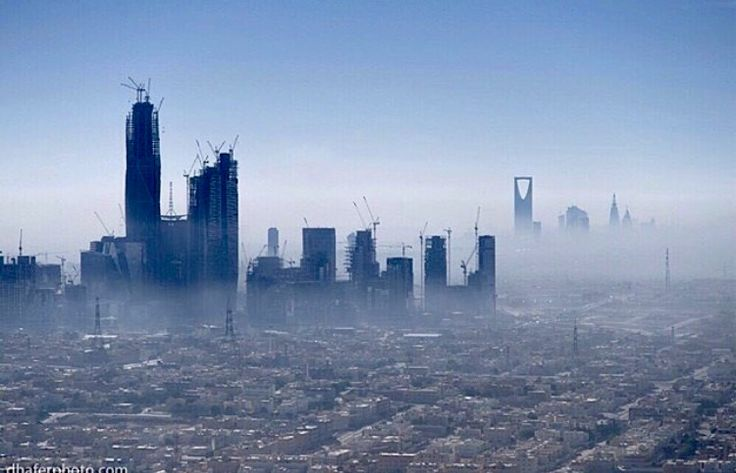

SAUDI ARABIA ? VISION 2030 ? OPPORTUNITY
Riyadh is at the center of Saudi Arabia's transformation. Vision 2030 is reshaping the capital through investment, innovation, infrastructure and new economic opportunities.
Vision 2030 is Saudi Arabia's long-term strategy to diversify the economy, reduce dependence on oil revenues and create new opportunities across multiple sectors.
Riyadh sits at the heart of this transformation and is expected to become one of the world's leading business and investment destinations.
The city is experiencing unprecedented growth through infrastructure projects, real estate developments, transportation investments and business expansion.
New districts, commercial centers and residential communities continue to reshape the urban landscape.
Vision 2030 is creating opportunities across consulting, professional services, finance, logistics, education, healthcare and digital industries.
Many international companies are expanding operations in Riyadh to participate in Saudi Arabia's growing economy.
Saudi Arabia is investing heavily in technology, artificial intelligence, digital transformation and smart city initiatives.
These investments create opportunities for startups, software companies, technology professionals and innovation-focused businesses.
Large-scale developments continue driving demand for construction, engineering, architecture, project management and real estate services.
Investors and developers are closely monitoring Riyadh's expanding residential, commercial and mixed-use projects.
One of Vision 2030's goals is expanding tourism and entertainment industries. Riyadh has seen major growth in events, attractions, hospitality projects and cultural experiences.
These sectors continue creating jobs and investment opportunities.
Entrepreneurs are benefiting from improved access to business support programs, startup ecosystems and funding opportunities.
Riyadh is becoming one of the region's most attractive cities for launching and scaling businesses.
As Vision 2030 projects continue advancing, Riyadh is expected to strengthen its position as a global business and investment hub.
For professionals, entrepreneurs and investors, the city offers significant long-term potential and a growing range of opportunities.